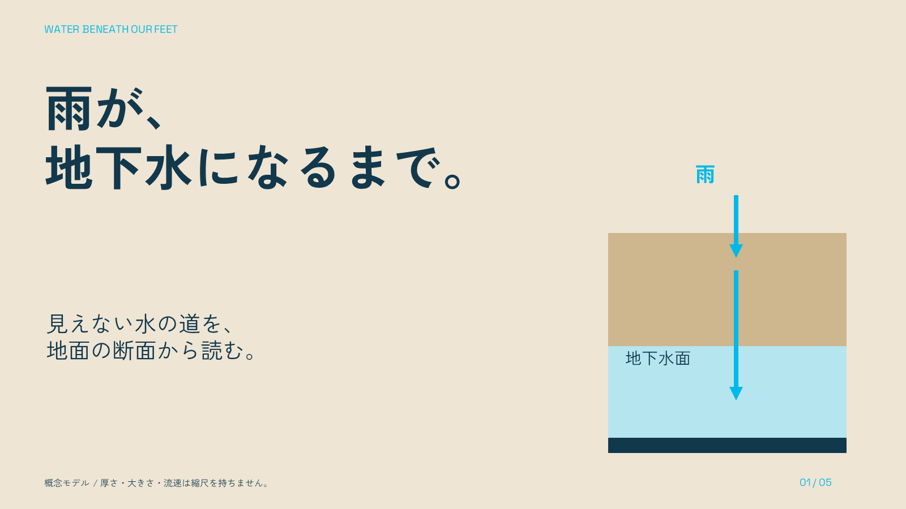
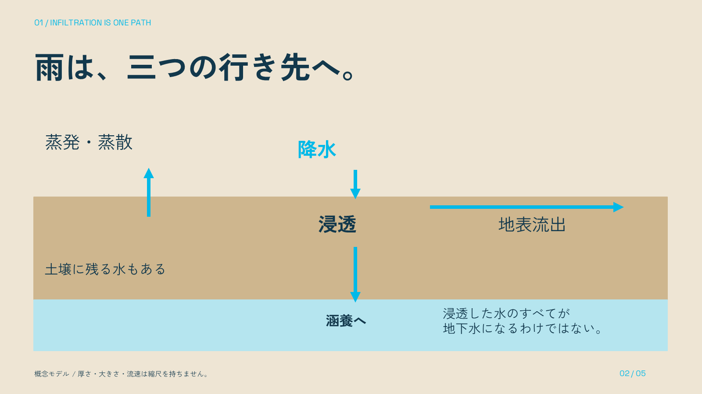
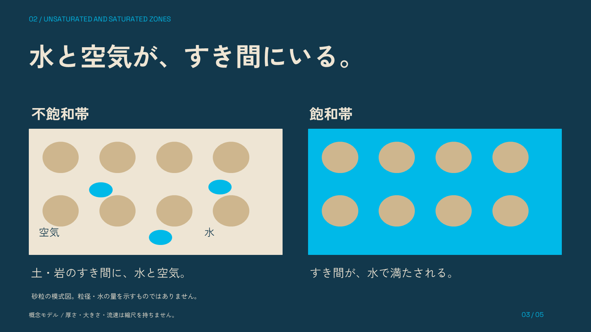
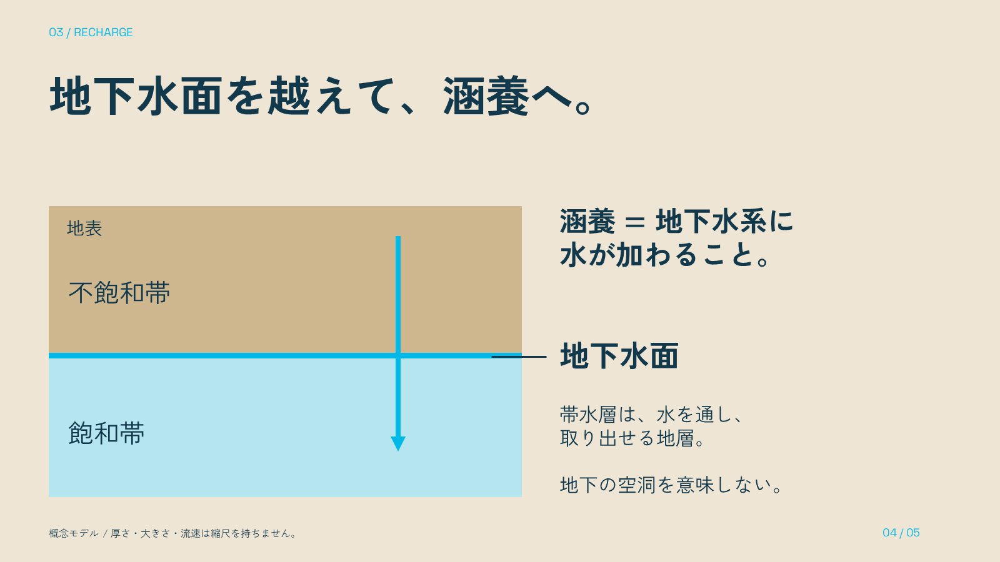
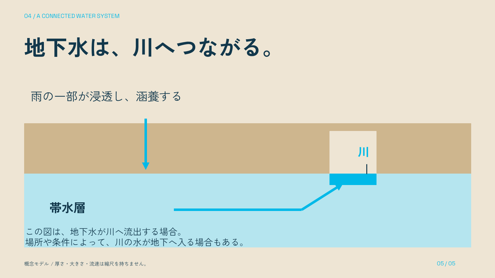

<!doctype html><html lang="ja"><meta charset="utf-8"><meta name="viewport" content="width=device-width"><title>雨が、地下水になるまで。</title><style>body{margin:0;background:#12384c;color:#eee5d4;font-family:sans-serif}header{padding:28px 5vw}a{color:#00b9e8}main{padding:0 5vw 50px;display:grid;gap:25px}img{width:100%;display:block}figure{margin:0}figcaption{padding:10px}</style><header><h1>雨が、地下水になるまで。</h1><p>5ページのnative科学概念図 / 縮尺なし</p><a href="deck.pptx">PowerPoint</a> · <a href="render/deck.pdf">PDF</a> · <a href="SKILL.md">日本語SKILL</a> · <a href="../../../downloads/sci-diagram-example-ja.zip">制作ZIP</a> · <a href="README.md">利用案内</a></header><main><figure><figcaption>01 / 05</figcaption></figure><figure><figcaption>02 / 05</figcaption></figure><figure><figcaption>03 / 05</figcaption></figure><figure><figcaption>04 / 05</figcaption></figure><figure><figcaption>05 / 05</figcaption></figure></main></html>